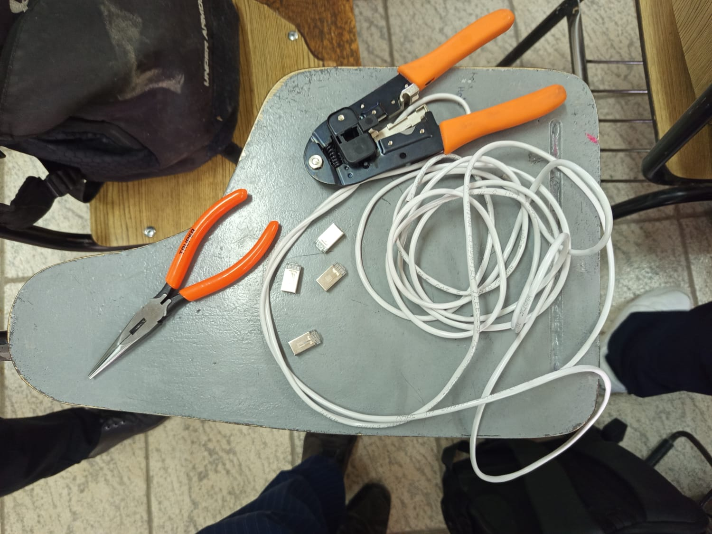

| Cable UTP Cat 5e/6 | Es un cable de par trenzado que se utiliza para conectar dispositivos de red | |
| Conectores RJ45 | Son conectores que se utilizan para conectar el cable UTP a los dispositivos de red | |
| Pelacables | Es una herramienta que se utiliza para pelar el cable UTP | |
| Crimpadora | Es una herramienta que se utiliza para crimpstrar los conectores RJ45 | |
| Probador de cables | Es una herramienta que se utiliza para probar la conexión del cable UTP |  |